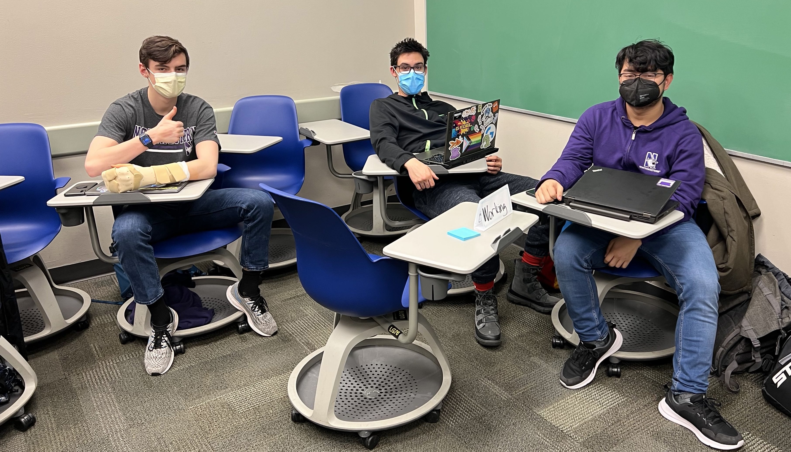
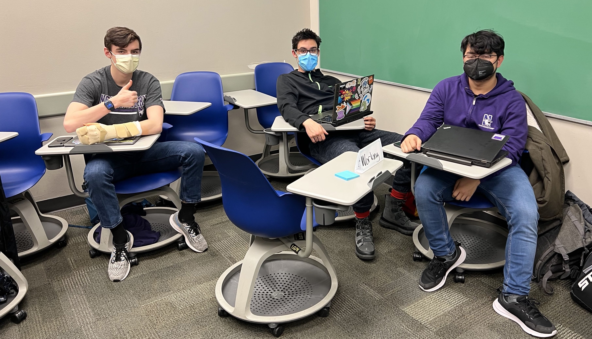

Snack Overflow
DSGN 305: Human-Centered Service Design

Summary
Our client was Kate Compton, a Northwestern Computer Science (CS) professor who came to us with the question of how to foster student belonging in CS. We worked part-time over 10 weeks and developed a service called “Snack Overflow” (a play on Stack Overflow, the public Q&A CS community platform.)
I collaborated with my three teammates to develop ideas and create deliverables as well as conduct stakeholder interviews, in addition to synthesizing key takeaways to present to my team.
Process:
We began with design research. We interviewed undergraduate CS students who were our main stakeholders, asking questions about their experience with belonging in CS and areas of improvement they saw.
To gain further insights, we conducted a survey, AEIOU (Activities, Environments, Interactions, Objects, and User) observations, and service safaris.
Based on these findings, we built a journey map of an introductory CS class along with user personas:
From those four research methods, we discovered that many students experienced a lack of belonging both academically and socially, leading to a sense of imposter syndrome:
- In terms of academics, students didn't feel smart enough to be in CS compared to their peers. The CS department’s speaker events felt formal and too academically challenging which contributed to feelings of inadequacy.
- Socially, students felt that they didn’t have friends in CS, and they struggled more in their classes than if they had peers to collaborate with or simply talk to. This feeling of isolation was particularly the case for underrepresented minority students.
We presented our progress to professionals including CS Professor Compton and design researchers, and took their comments into consideration in time for our storyboards, which we presented to stakeholders for feedback. Here’s an example of the storyboard we made for Snack Overflow:


Afterwards, we began prototyping: we designed and organized a smaller-scale version of the event to test with a group of eight freshmen, in which we provided food and activities to walk them through.
Prior to the event, we sent out an email with a survey to 23 dorm residents and also designed a flyer to gauge interest in attending an event for socializing, networking, and homework with other students. The survey indicated that 87% of respondents would be interested, and 85% of them remembered learning about the event three days later.
The flyer (which asked people to rip off a paper tab if interested) was unsuccessful, as no tabs were removed.
 

The event welcomed students by asking them to put on a name tag (color-coded by activity) and add a song to a playlist that would be playing throughout the event. We had three spaces, (for socializing, networking, and homework) and students were allowed to move around to different tables as they wished.
Participants shared that they liked the Spotify playlist because it added a collaborative component that made them feel involved in creating the space. Students also liked having name tags to facilitate social connection, although they weren’t very helpful beyond that; the color-coding felt unnecessary.
They saw no difference between networking and socializing. Many students still felt too intimidated to talk to and collaborate with their peers, as they didn’t know each other and didn't know how to find who was working on the same problem. As a result, some students gravitated towards just going on their phones or working independently.
Second Run:
Based on this user feedback, we revised the event for a second run with a different group of eight students. We developed icebreaker questions to facilitate conversation, and we merged networking with socializing to be one space.
We also removed name tag color-coding and added whiteboards for the working area to show what problem students are working on in order to resolve the difficulty of finding peers to collaborate with.
Students seemed to interact more easily and comfortably compared to our first event, but we still noticed room for improvement.
Overall, we prioritized feedback in our decisions regarding what to continue and modify during our process. We have outstanding “how might we” questions we can explore, such as:
- How might we catalyze student learning and collaboration?
- How might we catalyze conversations outside of working?
- How might we encourage participation without repeated reminders?
- How might we make this a ritual to encourage fuller participation?
Looking Back
I would’ve been more mindful of the human-centered design approach. For example, we tested flyers as a prototype to advertise the event without sufficiently considering our target audience’s perspective. Many students do not look at flyers (ourselves included), yet we created them because flyering is a common approach.
We also had a bold headline titled “Are you interested in free food?” and asked interested individuals to pull off tabs, but 1) the headline was misleading because we were not yet offering food, and 2) there was no tangible incentive for students to go out of their way to pull off the tabs. As a result, this prototype was largely ignored.
From this, I learned to think in a more human-centered manner, considering user perspectives. Taking the time to get more feedback on the flyers would likely have highlighted this insight sooner, so I learned how crucial feedback is for stages all throughout the design process.